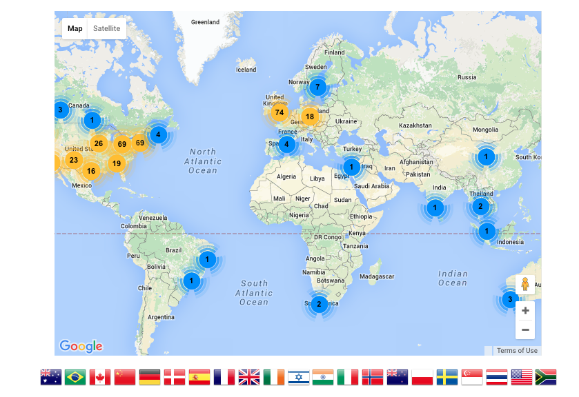

Introducing Software Carpentry
October 2015

Our Mission
To make researchers more productive
by teaching them basic lab skills for scientific computing.
 |
|
We run over a hundred workshops a year, build and maintain open access teaching materials, and run an instructor training program.
|
Our Results
-
20% improvement in productivity is common *
-
10X isn't rare*
-
Do the old things faster
-
Tackle new problems
-
Ready for HPC, the cloud, big data, ...
-
Start doing open science
* Of course current methods to evaluate impact are flawed
Caveat
There's a lot we don't know.
- How to measure programmers' productivity?
- How to measure scientists' productivity?
- The unknowns don't cancel out
Our biggest failing is lack of systematic assessment
Who we teach
Our learners are typically graduate students in
- science
- engineering
- medicine
- related research-intensive disciplines...
who have written a few lines of code but aren't familiar with computing's equivalent of good laboratory practices.
Where we teach

2010-2014: 265 workshops for 9000 people
Where we are

2010-2014: 265 workshops for 9000 people
What We Teach
| the Unix shell |
⇒ |
automate repetitive tasks |
| Git |
⇒ |
track and share work |
| Python or R |
⇒ |
build modular code |
| SQL |
⇒ |
manage data |
Advertise the tool, teach the thinking
How we teach
It's all in the details.
| Two days |
Charge a fee |
| Live coding |
Sticky notes |
| Group signup |
Peer instructors |
How we teach
Open isn't just for science.
- Our lessons have had over 150 contributors
- We can write them the way we write software and encyclopedias
Open collaboration is the real revolution.
Stanford 2015 summer workshops.
Amy E. Hodge, Science Data Librarian offered these quotes and comments on three summer workshops from 2015.
Stanford 2015 summer workshops.
- "It was all great!”
- "Git will change my life!”
- "Attendees also were clear in their praise of the quality of the instructors, their clarity, and their overall helpfulness… specifically... how well-organized and well-thought-out the sessions were, how approachable the instructors made the material, and how useful the hands-on approach... was to driving home the goals"
Stanford 2015 summer workshops.
Stanford Instructor David Hong, who attended one bootcamp and with whom I worked on planning that event, said it "was an outstanding opportunity to quickly gain experience on programming principles that enhance workflow and improve collaborative research processes."
Software Carpentry Foundation
Thank you for listening
←→
/